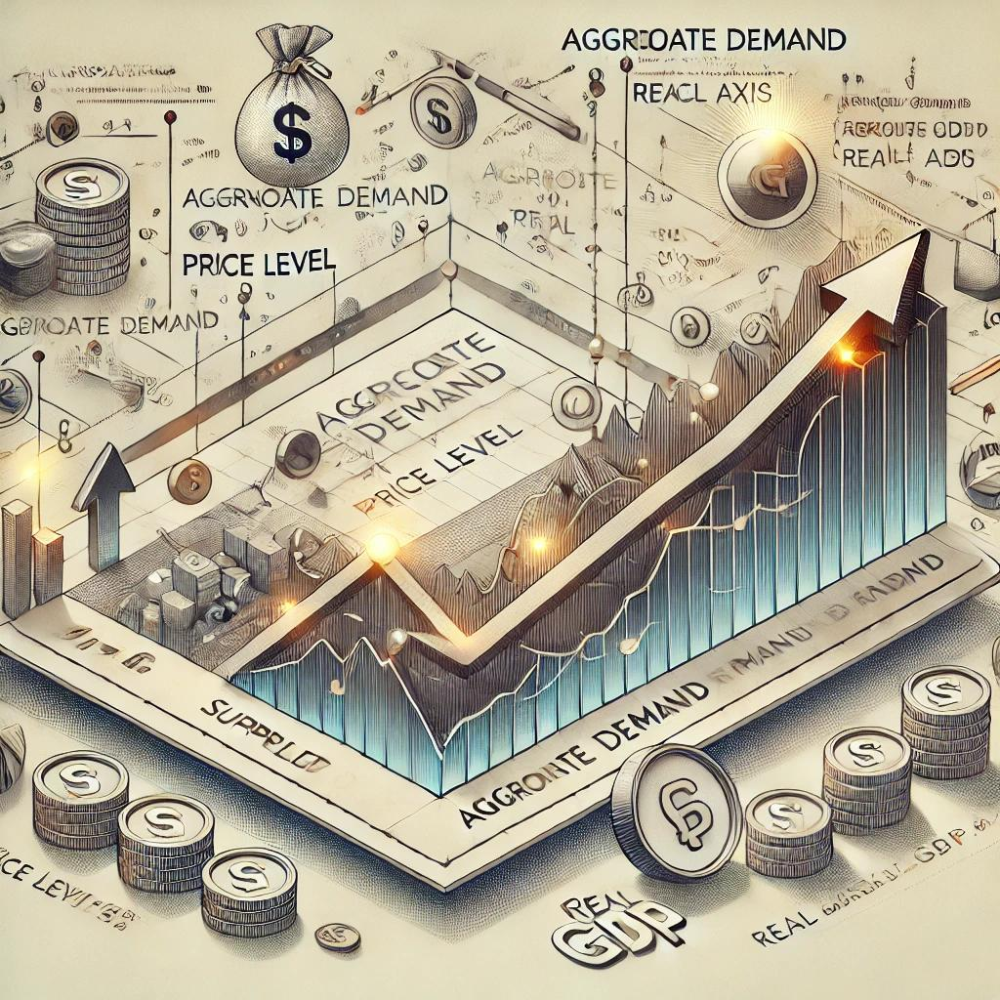
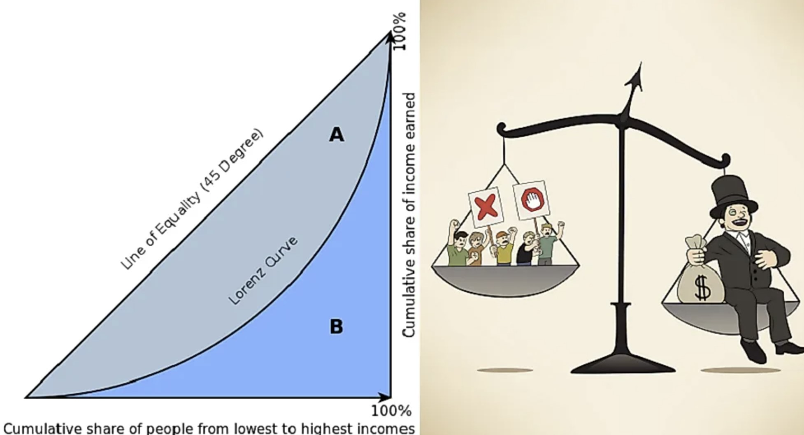
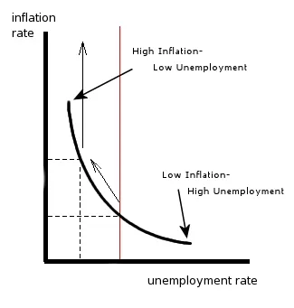
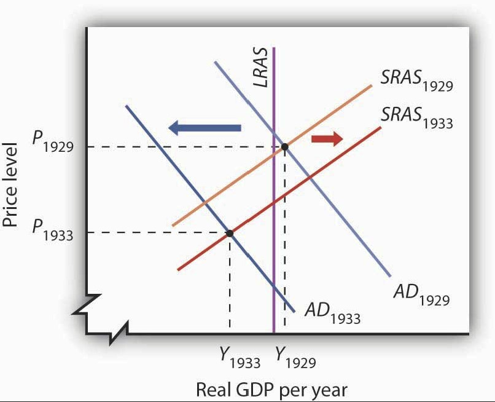
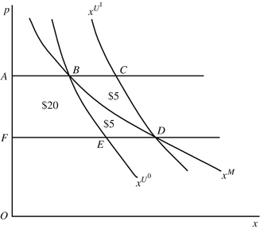

Data visualization is a critical tool in data science, but common mistakes—such as using inappropriate chart types, overwhelming audiences with excessive data, or rigidly adhering to rules—can tilt insights. Pearce (2022), however, argues that thoughtfully breaking conventional visualization rules can enhance clarity and communication. In this article, I will be walking you through common visualization mistakes in the science of economics. quart
Models and Graphs in Economics
Models are simplified representations of real-world scenarios based on underlying assumptions, while economic graphs serve to visualize and illustrate the economic problems. In this context, we will examine common visualization practices and pitfalls in economic theories, focusing on how effectively data is represented to capture and communicate complex economic phenomena. Some of the common mistakes raised around visualization of economic issues are deluded color contrast, misleading charts, improper use of 3D graphics, wrong visualization method, confusing Correlations, vague charts, forcing a relationship by cherry-picking scales, over plotting (too much data), omitting baselines and truncating scale,zooming in on favorable data (biased representation), etc (see Bowers (n.d.), Leo (2019) and Pearce (2022)).
Flaws in Some Economic Graphs
At times, the visualization graphs in use might not directly represent the underlying economic problem in a bid to either follow the norm or attain simplified representation for pedagogical purposes. For example, The Economist, one of the prominent newspapers in the field, covered some of the major visualization issues they had in their analysis, some of which were intentionally overlooked in a bid to simplify the communication of the topic to the general audience. See for example this article by Rosamund Pearce of the Economist who presented the reasons to break the rules in data visualization and other similar article by Leo (2019) on the visualization mistakes the Economist has made, here.
Below are some examples of the general visualization flaws in the field of economics to highlight:
Lorenz Curve
As part of income distribution models, Lorenz Curve is used for representing income or wealth inequality. The cumulative percentage of total income and the corresponding cumulative percentage of the population is depicted in this graph to capture the share of resources shared by the population in a given country. While it is a powerful tool to capture equitable resource distribution in an economy, it oversimplifies inequality by failing to capture distribution changes effectively.

Phillips Curve
Phillips Curve is a graphical depiction of opposing economic forces: unemployment and inflation. The graph depicts the inverse relationship between these economic forces which lacks generalizability in the cases of some economic conditions, like stagflation (checkout the 1970s stagflation caused by oil crisis). The graphs comes with series of validity questions in relation to such misrepresentation issues of the inflation-unemployment relationship.

Fig 3. Phillips-Curve, taken from InflationData.com (2013) AD-AS Model:
The aggregate demand- aggregate supply model (AD-AS Model) is a simplified representation of the national output captured through the national income and output. The graph uses smooth, downward-sloping aggregate demand, upward-sloping short run aggregate supply curve (SAS) and vertical long run aggregate supply (LAS) curves to represent economic dynamics and macroeconomic stability in the short-run and the long-run. The graph is limited in that it oversimplifies complex market dynamics with smooth, unrealistic curves.

Supply and Demand Graphs:
The convetional micro-economic model of Twin Forces of the Market is well-known for its foundational depiction of market and its players in a simplistic presentation. While the model is a powerful tool to understand complex consumers’ and producers’ behaviour, it is a flawed depiction in that it swaps the variables, price and quantity, on the horizontal and vertical axis.
Let us now look into this by taking a use case from the graphical representation of one of the twin forces of the market, demand by considering the Marshalian and Hicksican demand curves.
Use Case- The Demand Curve
Demand and supply curves represent the twin forces of the market, illustrating the relationship between price and quantity. However, from a design perspective, these graphs deviate from standard data visualization conventions for dependent and independent variable axis representation. Theoretically, according to the law of demand and supply, quantity is the dependent variable influenced by price changes, along with other non-own price determinants of demand and supply. Yet, these graphs commonly place price on the vertical axis, implying the reverse relationship.
This unconventional representation has sparked discussions, such as in this thread on Stack Exchange, stating that such design flows are accepted for their simplicity, even though they may lack clarity. The historical reasoning traces back to economists like Alfred Marshall, who treated price as the dependent variable, responding to changes in quantity. Despite its departure from data visualization and mathematical norms, this approach persists because it aligns with traditional economic theory and teaching practices.
(see a tread in this stack overflow, for example)that we are used to such representations of the curves for simplicity, but the graphs happen to vaguely be presented. Having a look at a demand curve, price is placed on the vertical axis and quantity on the horizontal, reversing the mathematical convention where the independent variable appears on the horizontal axis. This practice originated with economists like Alfred Marshall, who treated price as the dependent variable responding to changes in quantity. Despite its unconventional nature, this axis choice persists due to its alignment with traditional economic theory and teaching.

Greg from the Economist had a response on “Who invented supply and demand?” through his blog post, where he stated:
“…given the way we now teach supply and demand, it makes more sense to have price on the horizontal axis. The price is viewed as the variable that determines quantity supplied and quantity demanded, and we usually put the dependent variable (which here is quantity) on the vertical axis.” - Mankiw (2006)
Concluding Remarks
While mathematical formulations lay a foundation for presenting economic problems, other mathematical and visualization issues arise in the communications few of the core economic notions and theories. Some of these issues are overlooked, while some persist in misleading the target audience about the underlying economic issue. Wrapping up, while conventional presentations and norms in the field appear to be at ease to visualize economic problems, striking a balance between creativity and best practices ensures visualizations effectively convey their intended message. This should be with a due consideration that the core foundations of visual analytics remain in tact for an effective communication of economic problems.